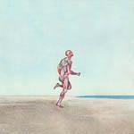

Music Reviews
-

Animal Collective Centipede Hz
Everyone's favorite experimental indie-rockers are back with 11 songs every bit as bizarre and strangely accessible as you could reasonably hope for.
Forrest Cardamenis says Centipede feels good... -
Poor Moon Poor Moon
The side project of Fleet Foxes member Christian Wargo is a hit and miss affair with some inspired moments.
Andrew Ciraulo reviews... -

Wild Nothing Nocturne
Ever wonder what a dream pop album with no room for error sounded like? Well, Wild Nothing's sophomore album may be for you.
David Hogg reviews... -

Holy Other Held
The Mancunian producer explores the dark corners of his psyche with Held, a downtrodden journey that puts out deep, inward feelings in hermetic communication.
Juan Edgardo Rodríguez won't mention Burial... -

Mount Eerie Ocean Roar
Ocean Roar, the companion piece to Clear Moon which was released earlier this year, finds Mount Eerie architect Phil Elverum creating one of the most imposing and beautifully mesmeric albums of his career.
Joshua Pickard dreams of the last time he was at the ocean to review... -

Matthew Dear Beams
Matthew Dear brings a new album of deep, dark and above all, sexy dance music.
James McKenna gets his groove on... -
JJ DOOM Key to the Kuffs
This collaboration between underground hip-hop innovators (MF) DOOM and Jneiro Jarel is uneven and brief, but intriguing in its oddity.
Stephen Wragg tries out some Cockney Rhymin Slang... -

TEEN In Limbo
Utilizing a beautifully nuanced approach to production and stylistic variety, Here We Go Magic associates TEEN take a workingman's approach to dream pop on their debut album that should not go unnoticed.
Peter Quinton, in reviewing yet another teenager themed group, still keeps his Tiger Beat issues at bay... -
Nas Life Is Good
Nas gets a divorce, writes an album about it. His Blood On The Tracks?
James McKenna finds out... -

Sleepies Weird Wild World
Pop punk without the “pop,” Sleepies Weird Wild World is the most fun punk influenced rock album I’ve heard that didn’t result in vomiting, disillusionment and weeks’ worth of laments about feeling disconnected from the shit kids listen to these days. But, it's also a transitional piece, the band itself a work in progress.
Sean Caldwell reviews...